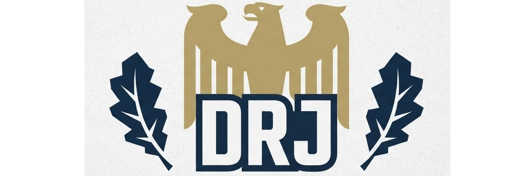

Mut zur Wahrheit • Für unsere Region und Heimat

Wir – Matteo Neuman und F. W. – stehen als engagierte Jugendliche für eine heimatverbundene, bürgernahe Politik. Während bestehende Strukturen oft den direkten Draht zur jungen Generation vermissen lassen, möchten wir selbst aktiv werden und Verantwortung übernehmen. Wir haben diese Initiative ins Leben gerufen, weil wir uns eine Politik wünschen, die die Zukunft unserer Gesellschaft stärkt und reale Zukunftsfragen lösungsorientiert anpackt.
Als freie Jugendinitiative organisieren wir uns gemeinsam, um uns Gehör zu verschaffen, zu diskutieren und uns konstruktiv für unsere Region einzusetzen. Wir stehen für einen aktiven Austausch, gesellschaftliche Mitbestimmung und gemeinschaftlichen Zusammenhalt.
Deutschland und unsere lokalen Regionen brauchen frische Impulse und eine Politik, die die Anliegen der Bürger und der Jugend in den Mittelpunkt stellt. Wir wollen aufklären, vernetzen und eine Plattform für den Austausch bieten, die über den Schulalltag und gängige Medien hinausgeht.
Klicke dich durch unsere Ziele oder werde direkt Teil unserer Initiative!
Jetzt mitmachen